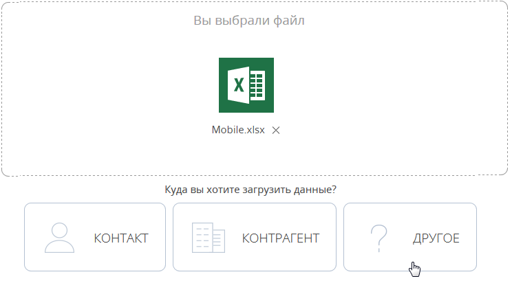

Для массового добавления записей в Creatio используйте импорт данных. Клиентскую базу, список продуктов, записи справочников или другие данные можно добавить в Creatio из файлов Excel за считанные минуты.
Вы можете выполнить импорт из Excel перед началом работы с Creatio, когда нужно добавить в систему новые записи. Импорт также можно использовать для обновления и дополнения существующих записей.
Чтобы импортировать данные из книги Excel в Creatio:
-
Подготовьте файл импорта в формате *.xlsx. Примеры наиболее часто используемых файлов для импорта записей:
- Запустите мастер импорта: перейдите в раздел, в который вы хотите импортировать данные, и нажмите кнопку Действия —> Импорт данных. Таким образом вы можете также импортировать данные на деталь или в справочник. При этом объект, в который будут импортированы данные из вашего файла, система выберет автоматически.
- Загрузите подготовленный файл Excel в Creatio: перетащите (drag&drop) файл на страницу мастера импорта или нажмите кнопку Выбрать файл и укажите путь к файлу. Сопоставьте колонки файла Excel с колонками (полями) выбранного объекта Creatio.
-
Выберите колонки, по которым будет определяться уникальность записи: установите признак для колонок, значения которых должны быть уникальными для результирующих записей. В зависимости от того, совпадает ли значение колонки импортируемого файла со значением в базе данных, Creatio будет создавать новую запись или обновлять существующую. Например, для контакта такой колонкой может быть ФИО: если контакт с таким же ФИО уже существует, Creatio обновит соответствующую запись; если контакт с таким ФИО в базе данных отсутствует, то в результате импорта будет создана новая запись.
-
Запустите импорт. Процесс будет выполняться в фоновом режиме, вы сможете продолжить работу с приложением.
В случае необходимости вы можете остановить импорт данных. Это можно сделать в разделе Журнал процессов, остановив выполняющийся процесс “FileImportProcess“. При отмене импорта процесс переходит в состояние “Отменен”, импорт данных прекращается.
Подготовить файл импорта
Чтобы успешно загрузить в Creatio данные из вашего файла Excel, убедитесь, что этот файл соответствует следующим условиям:
-
Файл в формате *.xlsx.
-
Файл не поврежден.
-
В файле не должно быть активных гиперссылок. Перед началом импорта отключите все активные гиперссылки в файле.
-
Файл содержит строку заголовков колонок и хотя бы одну строку данных.
-
Кроме строки заголовков колонок, в начале файла не содержится иных данных.
-
В файле нет скрытых листов и строк.
-
Количество строк в файле не превышает 50 000. Ограничение на количество строк в импортируемом файле является усредненным и зависит также от количества столбцов и объема информации, внесенной в качестве значений колонок.
При вводе значений в колонках импортируемого файла придерживайтесь следующих рекомендаций:
-
Убедитесь, что формат ячеек в файле Excel соответствует типу колонки в Creatio. Например, для колонки ФИО контакта установите в Excel текстовый формат ячеек, а для колонки Начало активности — формат “Дата”.
-
Значения в колонках дат вводите в одном из форматов:
где ДД — день, ММ — месяц, ГГГГ — год.
-
Если вы импортируете значение в колонку даты/времени, то введите время после даты через пробел.
Ниже приведены примеры корректных значений в полях даты/времени.
-
Значения в логических полях, например, Не использовать E-mail, укажите в одном из следующих форматов в любом регистре:
-
Укажите значения в полях, обязательных для заполнения. Например, для контакта заполните поле ФИО, а для контрагента — Название. Исключение составляют те обязательные поля, для которых в системе выполняется автоматическое заполнение значениями по умолчанию. Если оставить значения таких полей в файле пустыми, то они будут заполнены значениями по умолчанию. Например, поля Состояние и Ответственный, которые присутствуют в большинстве разделов системы.
-
Значения справочных полей укажите в соответствии с существующими значениями в справочниках Creatio. Все значения справочных полей, которые не будут найдены в Creatio, создаются автоматически.
Чтобы избежать дублирования записей в справочниках системы, при подготовке файла импорта рекомендуем проверить введенные вами значения.
При проверке значений не учитываются начальные и замыкающие пробелы и регистр, но имеют значение специальные символы. Ниже приведены примеры обработки значений.
В этом случае импортированная запись связывается с существующим значением. Новая запись в справочник добавлена не будет.
В данном примере в результате импорта в справочник будет добавлена новая запись.
Выполнить импорт клиентской базы
Рассмотрим пример импорта клиентской базы — списка контактов из файла Excel.
Чтобы импортировать данные, перейдите в раздел Контакты и нажмите кнопку Действия —> Импорт данных. На отдельной вкладке браузера откроется страница загрузки данных с автоматически выбранным объектом для импорта.
1. Загрузить файл
Первая страница мастера предназначена для загрузки файла Excel в автоматически выбранный системой объект.
Чтобы загрузить файл, нажмите кнопку Выбрать файл и укажите файл Excel, содержащий вашу клиентскую базу. Вы также можете просто перетащить файл в соответствующую область с помощью мыши. На данном этапе будет выполнена проверка соответствия формата и объема файла требованиям системы.
Для перехода на следующий шаг нажмите кнопку Далее.
2. Настроить колонки
На второй странице мастера загрузки данных необходимо указать соответствие (маппинг) колонок в вашем файле и в Creatio. Для этого используются колонки основного объекта, выбранного на первом шаге, и связанных с ним объектов. При этом:
-
Если название колонки в файле полностью соответствует названию колонки в Creatio, то оно будет распознано системой автоматически. Например, если в вашем файле имя контакта указано в колонке “ФИО”, то автоматически будет установлено соответствие колонке ФИО на странице контакта в Creatio. Автоматическое распознавание выполняется только по колонкам основного объекта.
-
Если название колонки в файле отличается от названия колонки в Creatio, то вам необходимо вручную задать сопоставление. Например, в файле импорта место работы контакта указано в колонке “Компания”. В этом случае вам необходимо вручную указать соответствие колонки “Компания” колонке Контрагент контакта. Для этого нажмите на ссылку Выбрать колонку (Рис. 1) и из списка колонок контакта Creatio выберите колонку Контрагент.
3. Загрузить дополнительную информацию
При импорте контактов и контрагентов есть возможность загрузить не только данные основного объекта, но и дополнительную информацию связанных объектов — записи на детали Средства связи и Адреса. Используйте эту возможность, если вам необходимо загрузить в систему несколько различных адресов или несколько средств связи одного типа, например, два мобильных телефона.
Для настройки соответствия с колонками деталей Средства связи и Адреса кликните по ссылке Дополнительные контактные данные и выберите нужную колонку (Рис. 2).
Когда установлено соответствие для всех колонок, которые необходимо загрузить, нажмите кнопку Далее.
4. Настроить проверку дублей
Страница Параметры дублей используется для ввода условий, по которым при импорте будет выполняться проверка дублирующихся данных. Если в файле импорта будет найдено несколько одинаковых записей, то в систему будет загружена только первая из них. Дублирующиеся записи не будут загружены в систему.
Вы можете выполнять проверку дублей по значениям одной или нескольких колонок основного или связанного объектов, для которых было установлено соответствие на предыдущем шаге.
Чтобы значения колонки использовались при проверке дублей, отметьте эту колонку флажком. При выборе нескольких колонок они участвуют в поиске, объединенные логическим оператором “И”. То есть, дубль будет определен по одинаковому значению во всех выбранных колонках. Например, для контактов можно настроить проверку по колонкам ФИО и E-mail (Рис. 3). И, если будет найдено несколько контактов, у которых совпадают ФИО и электронный адрес, то в систему будет загружен только один из них.
5. Выполнить загрузку данных
После того как правила поиска дублей указаны, нажмите кнопку Начать загрузку данных. Будет начата загрузка данных в систему. После начала импорта вы можете закрыть страницу — загрузка данных продолжится в фоновом режиме.
По результатам выполнения импорта на странице отобразится сообщение с количеством загруженных записей. Вы также получите системное оповещение с названием файла и количеством загруженных записей в центре уведомлений.
Проверьте результат успешного импорта в разделе Контакты. Из сообщения о завершении импорта вы сможете перейти прямо к загруженным записям. Все загруженные записи автоматически будут помечены тегом с датой и временем импорта. В дальнейшем вы сможете легко найти все импортированные записи, применив фильтр по тегу.
Тегирование загруженных записей и переход к их списку после импорта выполняются только в случае, когда в качестве объекта для импорта был выбран раздел.
Информацию о возможных ошибках загрузки данных вы можете просмотреть в справочнике Лог импорта из Excel. Здесь отображаются данные о тех записях файла импорта, которые не удалось загрузить.
Обратите внимание, что при загрузке данных все значения справочных полей, которые не были найдены в Creatio, создаются автоматически. Например, в систему могут быть добавлены города, типы контактов или контрагенты, указанные в файле для импорта контактов. Кроме того, если в файле импорта вы не заполнили значения в полях, для которых в системе предусмотрено автозаполнение, то в импортируемых записях эти поля будут автоматически заполнены значениями по умолчанию.
Выполнить импорт средств связи контакта
Вы можете импортировать не только основные контактные данные клиентов, но и дополнительную информацию, такую как средства связи и адреса. Они содержатся как в основном объекте (“Контакт”, “Контрагент”), так и на деталях на вкладке Основная информация.
-
Если средства связи содержатся в общем файле импорта контактов или контрагентов, то они будут загружены вместе с основной информацией. При этом данные будут сохранены как в основной объект (“Контакт” или “Контрагент”), так и на детали Средства связи. Но в этом случае вы сможете загрузить лишь одно средство связи каждого типа из списка доступных. Средства связи и адреса, которые содержатся в основном объекте, могут использоваться для поиска дублей при импорте. Подробнее этот случай рассмотрен при описании импорта клиентской базы.
-
Если же средства связи и адреса содержатся в отдельном файле, то их можно импортировать после импорта базы клиентов. Для этого при импорте выберите объект “Средство связи” контакта или контрагента.
Рассмотрим импорт средств связи из отдельного файла на примере номеров телефонов.
Подготовьте файл импорта. Для этого в первую колонку введите ФИО контакта, во вторую — тип средства связи, например, мобильный телефон, а в третью — номер телефона. Чтобы импортировать для одного контакта несколько средств связи одного типа, каждому из номеров должна соответствовать отдельная полностью заполненная строка файла импорта. Данные в колонке “ФИО” должны полностью соответствовать данным клиентской базы, загруженной в систему ранее.
Загрузите подготовленный файл в систему. Для этого:
- Откройте дизайнер системы, нажав кнопку
 в правом верхнем углу приложения.
в правом верхнем углу приложения. - В группе Импорт и интеграции кликните по ссылке Импорт данных. На отдельной вкладке браузера откроется страница загрузки данных.
- Нажмите кнопку Выбрать файл и укажите подготовленный файл импорта или перетащите файл при помощи мыши в выделенную область страницы загрузки.
- Нажмите кнопку Другое, чтобы выбрать объект импорта (Рис. 4).
Рис. 4 — Выбор объекта импорта
- Из появившегося списка выберите объект “Средства связи контакта” и нажмите кнопку Далее.
Если вы импортируете средства связи к записям раздела Контрагенты, товыберите из списка объект Средства связи контрагента. -
На второй странице мастера загрузки данных укажите соответствие (маппинг) колонок в вашем файле и в Creatio. В данном случае колонки “Номер” и “Тип” определятся автоматически, а колонке “ФИО” необходимо назначить соответствие колонке “Контакт”.
-
На странице Параметры дублей выберите колонки “Контакт” и “Номер” — по их данным при импорте будет выполняться проверка дублирующихся записей. Далее нажмите кнопку Начать загрузку данных.
После начала импорта вы можете закрыть страницу. Загрузка данных будет продолжена в фоновом режиме. Когда импорт завершится, в центре уведомлений появится соответствующее сообщение. Проверьте результаты загрузки в записях раздела Контакты.
Выполнить импорт адресов контакта
В записи контакта может содержаться информация о нескольких адресах разных типов: фактическом, домашнем, адресе доставки и т.п. Но только один из этих адресов может быть отмечен признаком Основной и отображается в реестре раздела.
Для загрузки адресов подготовьте файл импорта. Каждая строка этого файла должна содержать ФИО контакта в том виде, в котором эти данные представлены в системе, один из адресов и его тип. В колонке Основной отметьте адрес, являющийся основным для данного контакта, установив для него значение “True”. Для остальных адресов установите значение “False”. Для корректной загрузки адреса страну, город и индекс укажите в отдельных колонках файла импорта (Рис. 5).
Чтобы импортировать подготовленные данные на деталь Адреса, выполните следующие действия:
- Перейдите в раздел Контакты и откройте запись любого контакта.
- На странице выбранного контакта нажмите кнопку
 детали Адреса —> Импорт данных.
детали Адреса —> Импорт данных. - На открывшейся странице загрузки данных нажмите кнопку Выбрать файл и укажите подготовленный файл импорта или перетащите файл при помощи мыши в выделенную область страницы загрузки.
- На следующей странице мастера загрузки настройте соответствие колонок файла импорта и Creatio. В данном случае колонки “Адрес”, “Город”, “Страна”, “Индекс”, “Тип адреса” и “Основной” определятся автоматически, а колонке “ФИО” необходимо назначить соответствие колонке “Контакт”. Нажмите кнопку Далее.
-
Задайте параметры для поиска дублей — колонки “Контакт”, “Тип адреса” и “Адрес”. Далее нажмите кнопку Начать загрузку данных.
Загрузка данных производится в фоновом режиме. По завершении импорта вы получите сообщение в центре уведомлений. Проверьте результаты загрузки данных на примере адреса, который будет выведен в реестр раздела.
Обновить цены продуктов
Чтобы произвести массовое обновление цен на продукты, удобнее всего воспользоваться импортом данных на деталь Цены вкладки Цены и остатки страницы продукта. Для этого подготовьте файл импорта, в котором будут указаны:
-
Уникальные коды продуктов, для которых необходимо изменить цены.
-
Валюта.
-
Новые цены на продукты.
-
Прайс-лист, из которого взяты цены.
Если один и тот же продукт фигурирует в нескольких прайс-листах, то каждому из них в файле импорта должна соответствовать отдельная строка (Рис. 6).
Чтобы импортировать подготовленные данные на деталь Цены, выполните следующие действия:
- Перейдите в раздел Продукты и откройте запись любого продукта.
- На странице выбранного продукта нажмите кнопку
 детали Цены —> Импорт данных.
детали Цены —> Импорт данных. - На открывшейся странице загрузки данных нажмите кнопку Выбрать файл и укажите подготовленный файл импорта или перетащите файл при помощи мыши в выделенную область страницы загрузки.
- На следующей странице мастера загрузки настройте соответствие колонок файла импорта и Creatio. Если названия всех колонок файла соответствуют заголовкам полей в Creatio, то система определит соответствие автоматически. Нажмите кнопку Далее.
- Выберите параметры для поиска дублей из предложенных системой — колонки "Продукт" (по уникальному коду) и "Прайс-лист". Далее нажмите кнопку Начать загрузку данных.
После завершения загрузки в центре уведомлений появится соответствующее сообщение. С результатами вы сможете ознакомиться в разделе Продукты, а подробную информацию о выполнении импорта можно получить в справочнике Лог импорта из Excel.
Обновить данные об остатках продуктов на складах
Для добавления в Creatio актуальной информации об остатках продуктов на складах вы можете импортировать данные на деталь Остатки на складах вкладки Цены и остатки страницы продукта.
Вначале подготовьте файл импорта и укажите в нем:
-
Уникальные коды продуктов, остатки которых необходимо обновить.
-
Склад, на котором хранятся продукты.
-
Количество оставшихся продуктов.
-
Если некоторые продукты были заказаны, но еще не оплачены, то укажите их количество в отдельной колонке.
-
Количество товаров, доступных для продажи.
Если одинаковые продукты хранятся на разных складах, то каждый из них должен быть представлен в файле импорта отдельной строкой. Продукты с нулевыми остатками также должны быть указаны в файле импорта (Рис. 7).
Чтобы импортировать данные из подготовленного файла на деталь Остатки на складах, выполните следующие действия:
- Перейдите в раздел Продукты и откройте запись любого продукта.
- На странице выбранного продукта нажмите кнопку детали Остатки на складах —> Импорт данных.
- На открывшейся странице загрузки данных нажмите кнопку Выбрать файл и укажите подготовленный файл импорта или перетащите файл при помощи мыши в выделенную область страницы загрузки.
- На следующей странице мастера загрузки настройте соответствие колонок файла импорта и полей детали Остатки. Если названия всех колонок файла соответствуют заголовкам полей в Creatio, система определит соответствие автоматически. Нажмите кнопку Далее.
- Выберите параметры для поиска дублей из предложенных системой — колонки "Продукт" (по уникальному коду) и "Склад". Нажмите кнопку Начать загрузку данных.
- Загрузка данных происходит в фоновом режиме. После ее завершения вы получите соответствующее уведомление. Результаты импорта можно просмотреть в журнале загрузок или на вкладке Цены и остатки страницы продукта.
Часто задаваемые вопросы по импорту из Excel
Перезапишутся ли значения полей, если я выполню повторный импорт?
При импорте значений Creatio анализирует файл импорта, определяет колонки (по строке заголовков), а затем анализирует сами данные. Для проверки на дубли используются колонки, выбранные пользователем в ходе работы мастера импорта. При этом важно выбирать колонки c уникальными значениями, чтобы избежать ошибок и сохранить нужные данные. Если записи будут идентифицированы как дубли, то все значения полей из файла перезапишут текущие значения. В противном случае система создаст новые записи с импортируемыми значениями. Если в файле содержатся незаполненные колонки, то они не перезапишут и не удалят существующие значения.
Почему после проведения импорта продублировались записи?
В процессе импорта данных в Creatio выполняется проверка на дубли. Для проверки используются колонки, которые вы укажете в ходе работы мастера импорта. Для записей, которые идентифицируются как дубли, существующие значения в полях заменяются данными из файла импорта. Если на данном шаге выбрать колонки, в которых содержатся не уникальные значения, то записи не будут идентифицированы как дубли. В итоге система продублирует уже имеющиеся значения.
Как выполнить импорт записей на детали страницы?
Чтобы выполнить импорт записей на деталь страницы, перейдите на деталь, нажмите кнопку  —> Импорт данных. На отдельной вкладке браузера откроется страница загрузки данных с автоматически выбранным системой объектом для импорта.
—> Импорт данных. На отдельной вкладке браузера откроется страница загрузки данных с автоматически выбранным системой объектом для импорта.
Как импортировать продукты с характеристиками?
В отличие от средств связи и адресов, вы не можете импортировать характеристики сразу же вместе с продуктами. Этот процесс нужно разделить на несколько этапов.
- Импортируйте предварительно подготовленную таблицу со всеми продуктами и основной информацией по продуктам, включая обязательные для заполнения колонки "Название" и "Валюта", а также дополнительные колонки, например, "Код" и "Цена".
- Далее вам необходимо заполнить справочник Характеристики. Если характеристик немного, то их можно внести самостоятельно, указав название, тип и, по необходимости, описание. Чтобы импортировать характеристики, октройте одноименный справочник и нажмите кнопку Действия —> Импорт данных. Файл для импорта должна содержать две обязательные колонки: "Название", которая содержит названия всех характеристик, и "Тип значения", например, "дробное число", "целое число".
- Когда все характеристики добавлены в справочник, можно приступать к импорту характеристик в привязке к продуктам. Эта таблица должна содержать колонки с названиями или уникальными кодами продуктов, названиями характеристик и значениями этих характеристик.
Как импортировать продажи с продуктами?
Импорт продаж с продуктами в Creatio нужно выполнять в несколько этапов: сначала продажи, а затем продукты с привязкой к продаже. Подготовьте таблицу с данными по продажам и таблицу c продуктами в привязке к продажам, а затем приступайте к импорту.
- Перейдите в раздел Продажи и нажмите кнопку Действия —> Импорт данных. Загрузите вашу основную таблицу с продажами.
- На странице любой продажи перейдите на деталь Продукты, нажмите кнопку
 —> Импорт данных и загрузите таблицу с продуктами с привязкой к продаже. Обратите внимание, что названия продаж должны быть уникальными и повторять названия предварительно импортированных продаж. Если одинаковых продаж несколько, то продукт привяжется к первой в списке. Кроме того, названия продуктов должны соответствовать продуктам в разделе Продукты, иначе система автоматически создаст новые записи.
—> Импорт данных и загрузите таблицу с продуктами с привязкой к продаже. Обратите внимание, что названия продаж должны быть уникальными и повторять названия предварительно импортированных продаж. Если одинаковых продаж несколько, то продукт привяжется к первой в списке. Кроме того, названия продуктов должны соответствовать продуктам в разделе Продукты, иначе система автоматически создаст новые записи.
Как импортировать лиды с типами потребности?
Для того чтобы импортировать лиды с типами потребности, в файл импорта лидов необходимо включить поля с нужными значениями потребности. Если на втором шаге мастера импорта колонка "Тип потребности" не определилась автоматически, ее нужно выбрать вручную. Значения типов потребностей должны быть указаны так же, как и в справочнике Типы потребностей. Если названия отличаются, или импортируется новая потребность, то в справочник будут автоматически добавлены новые значения.
Как импортировать наполнение справочника?
Чтобы импортировать наполнение справочника, заполните в файле для импорта колонки, которые соответствуют колонкам, отображающимся в необходимом вам справочнике, например, "Название" и "Описание". Откройте справочник, который вы хотите заполнить данными из Excel, и нажмите кнопку Действия —> Импорт данных. После того, как вы сопоставите колонки и выберите параметры для поиска дублей, загрузите данные в систему.
После импорта некорректно отображается полнота наполнения профиля в реестре. Как ее обновить?
Значение показателя полноты профиля пересчитывается при открытии страницы контакта или контрагента, сохранении данных и изменении правил пересчета в справочнике. Поэтому после импорта контактов и контрагентов полнота наполнения профиля может отображаться некорректно. Для массового пересчета показателя полноты наполнения профиля после импорта нужно запустить бизнес-процесс “Обновить полноту профиля”.
Как импортом обновить значения одной колонки, а остальные оставить без изменений?
Если вам нужно изменить значения только одной колонки, то в файл импорта нужно включить минимум одну колонку для связи с данными раздела и поиска дублей, и непосредственно колонку с обновленными данными. В этом случае изменения не затронут другие значения в полях, которых нет в импортируемой таблице.
Как можно провести импорт, просмотреть результат, а потом вернуть базу в предыдущее состояние (до проведения импорта)?
Система Creatio рассчитана в первую очередь на накопление и анализ данных. Так что для возврата в предыдущее состояние нужно использовать возможности и функциональность самой базы данных. Тем не менее, у вас есть несколько вариантов для выполнения задачи:
-
Тестируйте импорт и настройки, работая с небольшими порциями данных (2-3 записи). В этом случае для возврата в исходное состояние нужно будет удалить всего несколько записей.
-
Вы можете запросить резервную копию (бэкап) базы данных, чтобы локально, на собственной площадке тестировать и настраивать систему.
-
Доработать функциональность Creatio, чтобы автоматически по расписанию удалять ненужные данные.
В моем файле для импорта поля “Фамилия”, “Имя”, “Отчество” содержатся в разных колонках, а в Creatio — одно поле [ФИО]. Как импортировать контакты?
Колонка "ФИО" в объекте Контакт обязательна для заполнения. Поэтому она должна быть указана в файле импорта. Если же в вашей таблице поля Фамилия, Имя и Отчество разделены в отдельные колонки, то нужно выполнить несколько простых шагов:
- Создать колонку "ФИО" в подготовленном для импорта файле.
- Заполнить колонку "ФИО". При этом вы можете использовать формулу для объединения текста из нескольких ячеек в одну.
- Сохранить и импортировать полученный файл.
Какие колонки должны быть в файле для импорта?
Если вы не знаете, какие колонки должны присутствовать в файле импорта, то можете воспользоваться одним из вариантов решения проблемы. Первый и самый простой: откройте раздел, в который нужно произвести импорт, и перепишите в таблицу названия нужных полей в качестве заголовков колонок.
Кроме того, можно вывести в реестр все необходимые колонки и воспользоваться действием Экспорт в Excel.
Примеры файлов для импорта:
Как импортировать пользователей из Excel?
В Creatio есть возможность импортировать из Excel список пользователей системы, а также пользователей портала. Подробнее читайте в статье "Импортировать пользователей из Excel”.